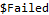

| ELLIPSES` SYMBOL |  |
Ellipse
Inputs: {ex,ey} - the Jones vector of the ellipse {x,y} - the global coordinates of the center of the ellipse opts - optional parameters to change the ellipse appearance Output: a list of values for the ellipse position as well as any visual changes to the ellipse |

By default, Ellipse will use the Decreasing Phase convention.
The default center coordinates are {0,0}.
The arrow head size is adjusted externally by the Arrowheads[] function.
Opts`θStart and Opts`StartPhase, and Opts`θEnd and Opts`EndPhase are interchangeable.
Options (8)
Default Value: Hue[1/3,1,1,.5]
an option that allows the user to change the color of the ellipse.
Default Value: 50
an option that allows sets the number of points used to generate the ellipse.
Default Value: 0.628
an option that allows sets the start phase (in radians) for the ellipse.
Default Value: 2π
an option that allows sets the end phase (in radians) for the ellipse.
Default Value: (Thickness[0.005]&)
an option that changes the thickness of the ellipse.
Default Value: Opacity[1]
an option that will change the opacity of the ellipse.
Default Value: Dashing[{}]]
an option that will change line the ellipse to a dashed line.
Default Value: "Decreasing"
an option that will change phase convention of the ellipse.
PrimaryExamplesSection

 Basic Examples (1)
Basic Examples (1)
Set up a basic ellipse centered at the origin:


Ellipse[] will generate output that can be used with the Graphics package:


 Options (8)
Options (8)

 Opts`NumSteps (1)
Opts`NumSteps (1)
Opts`NumSteps can be used to change the number of steps:


Increasing the number of steps will create a smoother ellipse.


 Opts`Color (2)
Opts`Color (2)
Opts`Color allows users to change the color of the ellipse:


Users can call information on the types of options:

Info63736844606-2507470

Adding in a color function option:


 Opts`OpacityFunction (1)
Opts`OpacityFunction (1)
Opt`OpacityFunction can be used to change the opacity of the ellipse::


 Opts`ThickFunction (1)
Opts`ThickFunction (1)
Opt`Thickness can be used to change the thickness of the ellipse:


 Opts`StartPhase (1)
Opts`StartPhase (1)
Opts`StartPhase changes the start position of the ellipse:


 Opts`EndPhase (1)
Opts`EndPhase (1)
Opts`EndPhase changes the end position of the ellipse:


 Opts`DashingFunction (1)
Opts`DashingFunction (1)
Opts`DashingFunction allows users to change the line dashing of an ellipse:


 Opts`Phase (1)
Opts`Phase (1)
Opts`Phase changes the phase convention from “Decreasing” to “Increasing”:


 Scope (1)
Scope (1)
Change the retardance of a circular polarizer, and plot the generated ellipses:


 Advanced Examples (4)
Advanced Examples (4)
Plot polarization with tilt:


Plot Orthogonal Polarization States:

 |
 |
 |

Make a grid showing relative phase differences:


Make a grid showing basis polarization states:


 •
•  •
•  •
•  •
•  •
•  •
•

Building Polarization Graphics